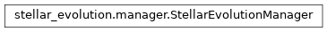

evolution_cmdline_args module¶
Class Inheritance Diagram¶

Provide functions for adding parameters defining the evolution model.
-
evolution_cmdline_args.add_and_parse_evolution_args(parser, disk_args=True)[source]¶ Add arguments for the binary evolution, some setup & return interpolator.
Parameters: - parser (-) – An instance of argparse.ArgumentParser to fill with arguments defining the evolution. Must alraedy contain all other arguments.
- disk_args (-) – Should command line arguments be added for configuring the initial circumstellar disk holding the primary’s spin locked?
Returns: - An object containing the parsed command line arguments as
members.
- :class:ManagedInterpolator:
A stellar evolution interpolator instance.
Return type: same as parser.parse_args()
-
evolution_cmdline_args.add_disk_args(parser)[source]¶ Add command line options for the initial disk spin locking.